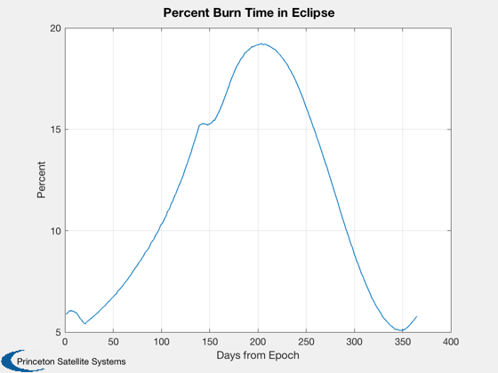
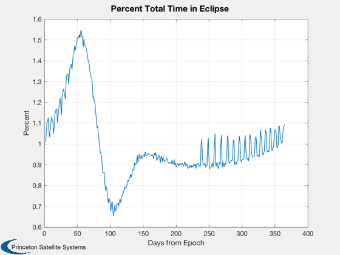
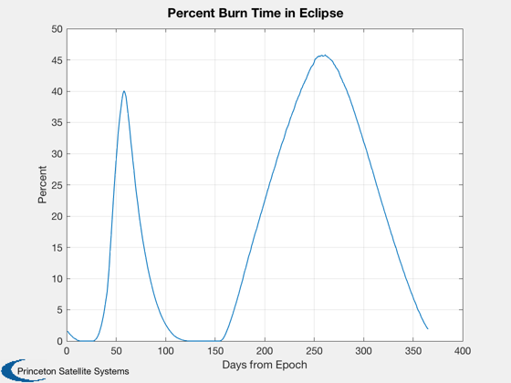
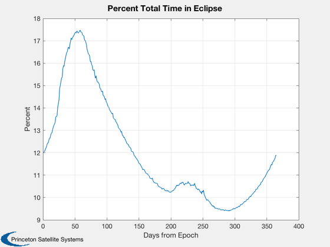
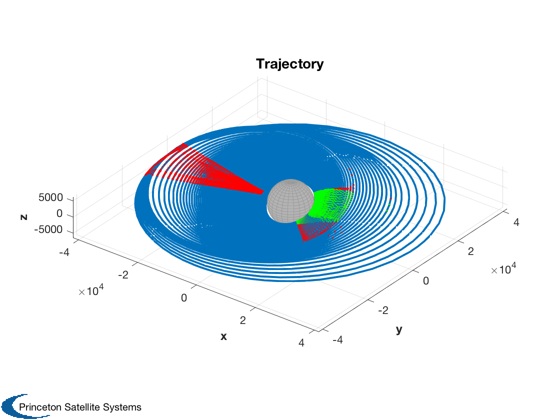

Contents
Find the launch date with the minimum eclipse time
Calculate the eclipse condition along the orbit for a year from the input epoch. Plot the fraction of the burn time that was in eclipse.
See also: ContinuousEclipse
%-------------------------------------------------------------------------- % Copyright (c) 2019 Princeton Satellite Systems, Inc. % All rights reserved. %--------------------------------------------------------------------------
Example transfer from GTO to LTO
The minimum amount of burn time in eclipse is 5%.
s = load('LunarTransferTraj.mat'); % temporary avail data jD0 = Date2JD([2020 1 1]); x = s.x; t = s.t; fracB = zeros(1,365); fracT = zeros(1,365); for k = 1:365 jD = jD0 + k; [~,fracB(k),fracT(k)] = ContinuousEclipse( x, t, jD ); end Plot2D(1:365,fracB*100,'Days from Epoch','Percent','Percent Burn Time in Eclipse') Plot2D(1:365,fracT*100,'Days from Epoch','Percent','Percent Total Time in Eclipse') 
Example transfer from LEO to GEO
There are many times during the year when the transfer would be free of eclipses!
s = load('GEOTransferTraj.mat'); % temporary avail data jD0 = Date2JD([2020 1 1]); x = s.x; t = s.t; fracB = zeros(1,365); fracT = zeros(1,365); for k = 1:365 jD = jD0 + k; [inEclipse,fracB(k),fracT(k)] = ContinuousEclipse( x, t, jD ); end Plot2D(1:365,fracB*100,'Days from Epoch','Percent','Percent Burn Time in Eclipse') Plot2D(1:365,fracT*100,'Days from Epoch','Percent','Percent Total Time in Eclipse') % Plot points that were in eclipse for worst point in loop [inEclipse] = ContinuousEclipse( x, t, jD0+265 ); [tOn,dTs,accs] = ContinuousBurnOn( x, t ); Plot3D(x(1:3,:),[],[],[],'Trajectory',6378); hold on; plot3(x(1,tOn),x(2,tOn),x(3,tOn),'r.') plot3(x(1,inEclipse),x(2,inEclipse),x(3,inEclipse),'g.') %--------------------------------------  